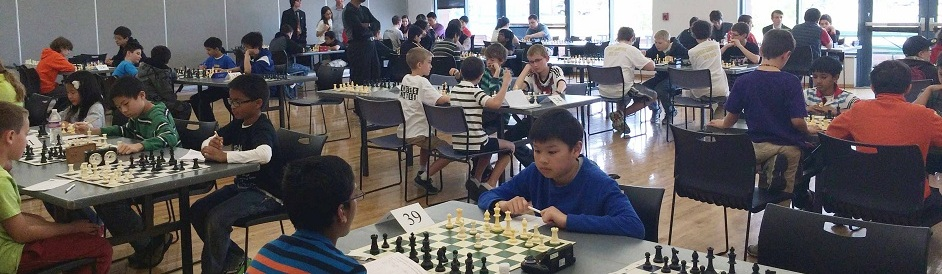

Colorado Scholastic Team Chess Championship
Tournament Structure
Purpose:
This tournament is designed to reinforce the existing regional scholastic chess infrastructure, and help promote scholastic chess activities throughout Colorado.
Sections:
The tournament contains three sections: Elementary School (K-5), Middle School (6-8), High School (9-12)
Teams:
There will be 6 teams in each division. One team will be selected from each of the following regions to represent their region in each division:
- Colorado Northwest region
- Colorado Northeast region
- Colorado Southwest region
- Colorado Southeast region
and the top two teams in the February state championship tournament from each division that is not already selected by above 4 regions.
Note: The elementary team will be chosen from the K-5 section of the February state championship, not the K-3 section.
Here is a map highlighting the regions:
New regions: If you are a TD and you would like to create a new region, please contact
Zachary Bekkedahl.
Time Control:
G60 no delay. USCF rated. Pairings are predetermined randomly (or mini-swiss) if a round robin is not possible.
Entry Fees:
$5 each player (it will cover the $3 CSCA membership fee if the player is not already a CSCA member). CSCA membership and USCF membership required. Discounted USCF membership is available, if needed. On-site registration accepted.
Prizes:
Plaques will be awarded to first and second place teams in each division. The first place team also receives the title of state champion.
General Information:
Boards and sets will be provided. Please bring your own clocks. The information on this site is subject to change.
Contact Information:
- For general tournament information including settings and location, please, contact CSCA Junior Representative Jackson Chen at jackson@chenjackson.com or 720-234-1186
- For tournament qualification information, please, contact CSCA Scholastic Coordinator Zach Bekkedahl at info@chessmatesFC.com or 970-581-2424
- Northwest region: regional coordinator is Zach Bekkedahl (at Info@chessmatesFC.com or 970-581-2424)
- Northeast region: regional coordinator is Jesse Cohen (at jessercohen@gmail.com or 303-772-3711)
- Southwest region: regional coordinator is Michael Mulyar (at mmulyar@milehighchess.com or 720-231-5818)
- Southeast region: regional coordinators are Lee Simmons (at http://www.rockymountainchess.com or 719-634-1144) and Tom Nelson(at tmbdnelson@comcast.net)
Qualification
Unless otherwise approved by the state scholastic director, the following qualifications must be met in order for teams to participate in the Colorado Scholastic Team Chess Championship:
- Each team will have 4 players ranked by strength. Any additional team members will count as alternates, and if both teams have alternates, then the teams can agree to allow the alternates to play and affect the result of the match. Two alternates are recommended at least. 4 players are all that is required to fill a team.
- Team players must be from the same school. Home schooled kids will be allowed to join a school team of their choice in their region that is in relative proximity to their residence. Homeschoolers must participate in the qualifier on the qualifying team to be eligible.
- Any team wanting to be a part of the State team chess championship must qualify at a regional tournament. The regional qualification tournament needs to be approved by the Colorado scholastic director. The regional coordinator has to have their regional tournament open to all schools in that region. Each year the tournaments that have the best regional standards will appointed by the scholastic director as a regional tournament. This will be decided by factors including: Accessibility to all players in the region, team tournament over individual with team awards, rated tournament over unrated and participation with higher participation being a better quality regional tournament. Other factors may be added in as well with the intention of being as fair as possible and giving every team a chance to qualify.
- The regional coordinator is responsible for hosting and running the qualifying tournament and selecting a winner.
- The regional tournament should be a team tournament. If not enough teams join or if players are unwilling to play with this format, then an individual tournament with an overall team winning based on the individuals' scores will be the backup format of the tournament.
- Each team's players must either join or be existing members if the United states chess federation. This is because the tournament will be USCF rated.
- As of 2014, there are five qualifying tournaments in four regions which select the six representative teams:
- Northwest region: Chessmates Kings Gambit in Fort Collins Colorado March 29th 2014 go to www.chessmatesfc.com for more info, The regional coordinator for the Northwest region is Zach Bekkedahl.
- Northeast region: Denver Chess League in Denver Colorado. For more info, go to https://sites.google.com/site/coloradochessleagues/home. The regional coordinator for the Northeast region is Jesse Cohen.
- Southwest region: Boulder Valley School District Chess Tournament in Boulder Colorado. For more info, contact mmulyar@milehighchess.com or call 720-231-5818. The regional coordinator for the Southwest region is Michael Mulyar.
- Southwest region: The Colorado Springs Scholastic Chess Series (CSSCS) (and possibly incorporating the D20 tournament) in Colorado Springs, Colorado. The regional coordinator for the Southeast region is Lee Simmons and Tom Nelson. Please, call Lee at 719-634-1144 for details.
- State Championship representatives: Scholastic State Chess Championship on February 15-16 2014 qualifies two teams. Go to www.colorado-chess.com/scholast/schtour.shtml for more info.
- You may ask permission to participate in a different region with good reasoning, please, contact Zachary Bekkedahl.